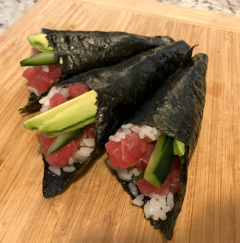
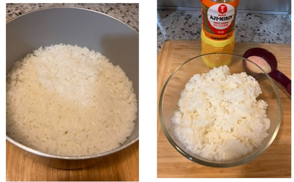
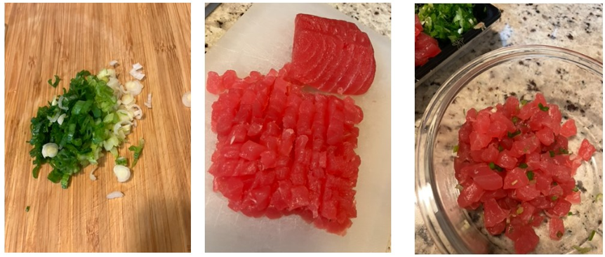
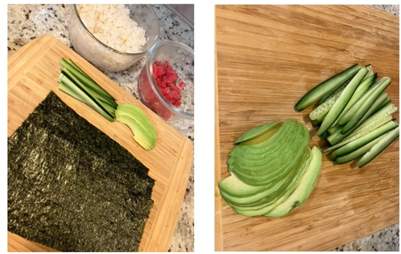
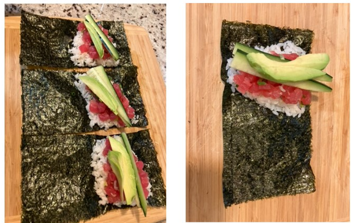
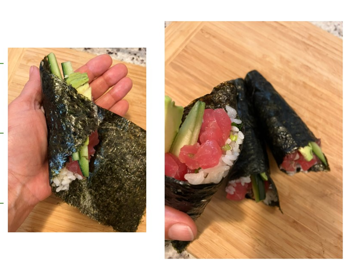

Making sushi at home is a fun, healthy, and customizable way to enjoy fresh sushi, for dinner parties or personal enjoyment.
Ingredients for Maguro Hand Roll
- Maguro Tuna (Bluefin)
- Green Onions
- Cucumber
- Avacado
- Sushi Rice
- Nori Sheets (Seaweed)
- Wasabi
Step-by-step process to make the hand roll
Step 1: Prepare Sushi Rice
Cook rice, let cool, then add vinegar, sugar, and salt.
Step 2: Prepare Maguro & Green Onion Mixture
Prepare Maguro & Green Onion Mixture
Step 3: Reay to Assemble:
Cut Nori: Cut nori in half for each hand roll.
Ingredients Prepped: Nori, rice, fish mixture, and add-ins ready for assembly.
Step 4: Add Ingredients
Add Rice: Place a small amount of sushi rice on the nori.
Add Filling: Spoon the maguro and green onion mixture onto the rice.
Add Optional Ingredients: Add cucumber, avocado, and wasabi.
Step 5: Form the Cone
Fold nori over filling: Align the corner where rice and seaweed meet
Roll into a cone: Roll from the bottom, gently pressing to secure the ingredients.
